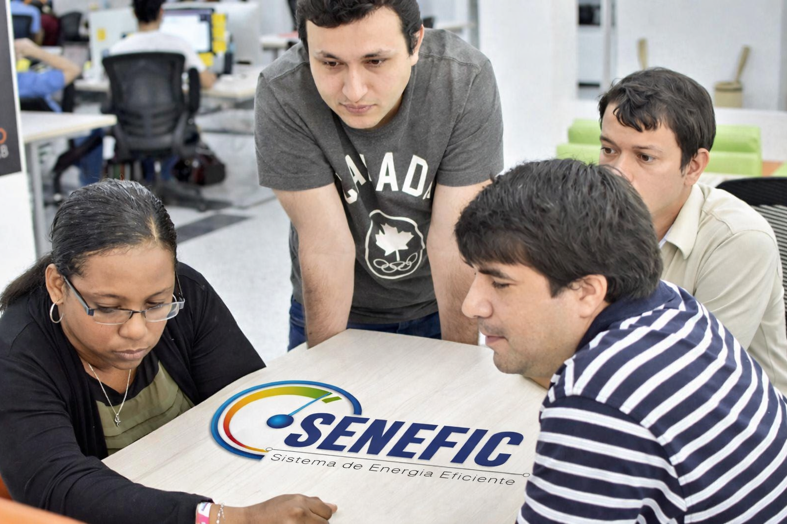
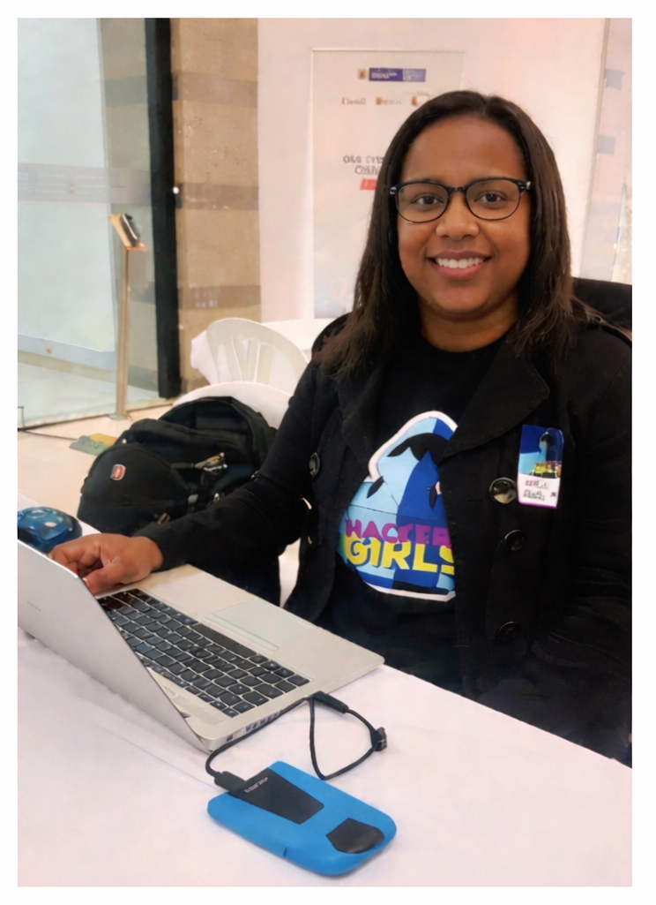
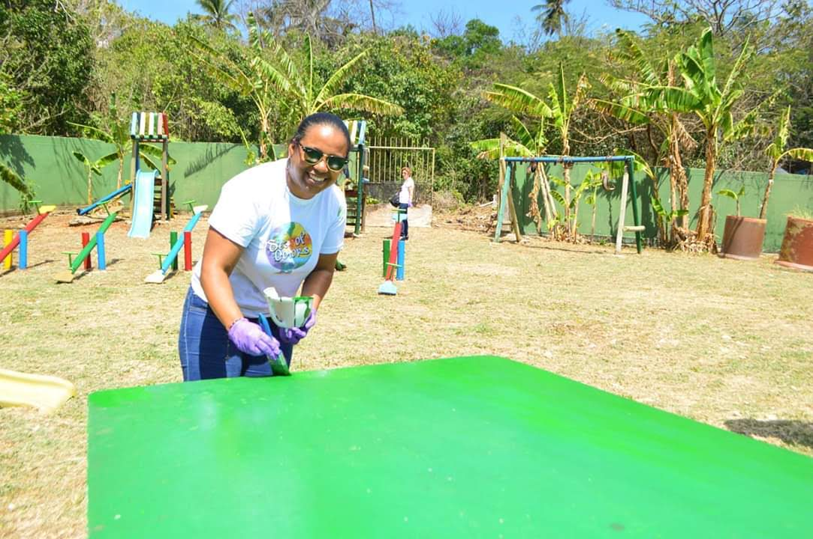

Technology leadership grounded in security, operations, and people
Tech by Shar focuses on building secure, reliable, and human-centered technology environments.
Fulbright Scholar • MSc Computer Science
Security is only effective if people can apply it.

Focus areas
Leadership and Strategy
Leading IT service delivery and improving how teams and systems work day to day.
Cybersecurity and Resilience
Making sure security is part of daily operations, not something separate.
Human-Centered Security
Helping people understand and apply cybersecurity in practical ways.
Innovation and Impact
Using technology to improve processes and solve practical problems.
Core philosophy
Technology should be secure, reliable, and usable in real environments. Security is not a separate function. It is part of how systems operate, how teams make decisions, and how people interact with technology every day.
My approach focuses on aligning operations, risk, and human behavior to build systems that not only work, but can be sustained and trusted over time.
Where this comes to life
Building a Security Program Across Critical Processes
Leadership: Led the implementation of an information security and privacy model across six core business processes, aligning practices with NIST Cybersecurity Framework and ISO 27001/27002.
Execution: Defined policies, established annual security plans, coordinated asset classification, and worked directly with process owners to manage risk.
Impact: Strengthened security posture and governance structure, improving visibility and control of information assets across the organization.
Driving IT Modernization and Process Improvement
Leadership: Coordinated and executed ICT modernization initiatives to improve organizational efficiency and service delivery.
Execution: Led deployment of web applications and services, implemented ITSM aligned with ITIL, and automated key business processes.
Impact: Improved process efficiency and service structure, enabling more consistent and scalable IT operations.
Highlights

SENEFIC Entrepreneurship · IoT-based energy efficiency system

HackerGirls · #CyberWomenChallenge Colombia (MinTIC + OAS) · Top 5 team

Rotary International · Leadership and community impact
Publications
IEEE Publication
Co-author of a published IEEE paper focused on technology and innovation.
View paperProfessional Insights
Ongoing thought leadership and articles on leadership, cybersecurity, and innovation.
View LinkedInFeatured Talks
Selected speaking engagements and workshops focused on cybersecurity, leadership, and resilient, human-centered technology environments.
2026 · ElevateIT Houston Technology Summit · EIT Events
Women in Technology Leadership: Driving Innovation and Enterprise Impact
Panelist · Discussed how leadership drives innovation, resilience, and enterprise impact.
2025 · the Colombian Ministry of Technology (MinTIC) and Ciberpaz
Digital Self-Protection Workshop for Human Rights Defenders
Facilitator · Strengthened digital security capabilities through human-centered practices.
2022 · Universidad Nacional Abierta y a Distancia (UNAD)
Building Cybersecure and Resilient Organizations
Co-presenter · Shared ISO 27001 implementation lessons and cyber resilience strategies.
2022 · Day of Shecurity
The ABC of Information Risk Management and Cybersecurity Culture
Solo Speaker · Introduced risk management frameworks and the role of cybersecurity culture.
Perspectives
Let’s connect
Open to conversations around leadership, cybersecurity, and collaboration.
Get in touch